专题2.2 数轴、相反数（举一反三讲义）
【北师大版2024】

【题型1 识别数轴】 2
【题型2 用数轴上的点表示有理数】 4
【题型3 数轴上的整点问题】 5
【题型4 数轴上点的平移】 7
【题型5 相反数的定义】 8
【题型6 根据相反数定义求值】 10
【题型7 化简多重符号】 11
【题型8 数轴与相反数的综合】 13
 知识点1 数轴
知识点1 数轴
定义：规定了原点、正方向和单位长度的直线叫作数轴，它满足以下条件：
（1）在直线上任取一个点表示数0，这个点叫作原点；
（2）通常规定直线上从原点向右（或上）为正方向，从原点向左（或下）为负方向；
（3）选取适当的长度为单位长度，直线上从原点向右，每隔一个单位长度取一个点，依次表示1，2，3，⋯；从原点向左，用类似的方法依次表示−1，−2，−3，⋯．

知识点2 数轴上的点与有理数之间的关系
1. 每个有理数都可以用数轴上的一点来表示，也可以说，每个有理数都对应数轴上的一点．
2. 一般地，设a是一个正数，则数轴上表示数a的点在数轴的正半轴上，与原点的距离是a个单位长度；表示数−a的点在数轴的负半轴上，与原点的距离是a个单位长度．
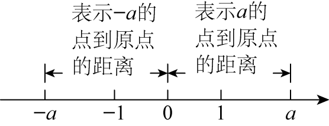
知识点3 相反数
1. 相反数的定义：像3和−3，12和−12这样只有符号不同的两个数，互为相反数．
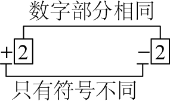
2. 相反数的表示方法：一般地，a和−a互为相反数．这里，a表示任意一个数，可以是正数、负数，也可以是0．
例如：当a=1时，−a=−1，1的相反数是−1，同时，−1的相反数是1．
特别地，0的相反数是0.
3. 相反数的几何意义：到数轴原点距离相等的两个点表示的两个数互为相反数．
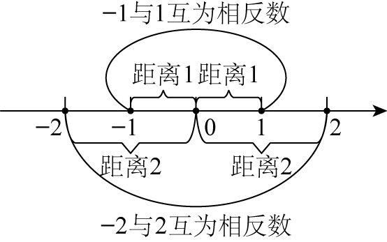
4. 求一个数的相反数：在任意一个数前面添上“−”号，新的数就表示原数的相反数．
5. 多重符号的化简：与“+”号个数无关，有奇数个“−”号，结果为负，有偶数个“−”号，结果为正．
【题型1 识别数轴】
【例1】（24-25七年级上·云南文山·阶段练习）下列图形中是数轴的是（ ）
A． B．
C． D．
【答案】D
【分析】本题考查数轴的定义，掌握数轴的定义是解题的关键；
根据数轴的三要素是原点，单位长度，正方向，分析哪个图形含有这三要素，就是数轴；
【详解】解：A、没有方向，故错误；
B、没有原点，故错误；
C、单位长度不一样长，故错误；
D、符合所有条件，是数轴，故正确；
故选：D
【变式1-1】关于数轴下列说法最准确的是( )
A．一条直线 B．有原点、正方向的一条直线
C．有单位长度的一条直线 D．规定了原点、正方向和单位长度的直线
【答案】D
【详解】数轴是规定了原点、正方向和单位长度的直线．故可知：D正确.
故选D.
【变式1-2】下列说法：
①规定了原点、正方向的直线是数轴
②数轴上两个不同的点可以表示同一个有理数
③有理数−1100数轴上无法表示出来
④任何一个有理数都可以在数轴上找到与它对应的唯一点
其中正确的是（ ）
A．①②③④ B．②②③④ C．③④ D．④
【答案】D
【分析】根据数轴的概念：规定了原点、正方向、单位长度的直线叫做数轴．所有的有理数都可以用数轴上的点表示，但数轴上的点不都表示有理数可得答案．
【详解】①规定了原点、正方向和单位长度的直线是数轴，故原说法错误；
②数轴上两个不同的点可以表示两个不同的有理数，故原说法错误；
③有理数−1100在数轴上可以表示出来，故原说法错误；
④任何一个有理数都可以在数轴上找到与它对应的唯一点，说法正确；
故选：D．
【点睛】此题主要考查了数轴，关键是掌握数轴的概念．
【变式1-3】超市、书店、玩具店依次坐落在一条东西走向的大街上，超市在书店西边20米处，玩具店位于书店东边50米处．请选择适当的单位长度画出数轴，并在数轴上标出超市、书店、玩具店的位置．
【答案】答案见解析
【分析】以东为正方向，书店为原点画数轴，然后根据数轴表示数的方法在数轴上分别表示出超市、书店、玩具店的位置即可.
【详解】解：以东为正方向，书店为原点画数轴，单位长度代表10米，如下图：
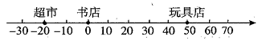
【点睛】本题考查了数轴的三要素：原点、正方向和单位长度，合理的选择原点和单位长度是解答本题的关键.
【题型2 用数轴上的点表示有理数】
【例2】（24-25九年级下·四川广安·期中）如图，数轴上点B表示的数是−2025,OA=OB，则点A表示的数是（ ）
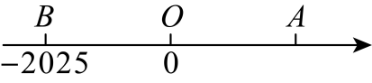
A．2025 B．−2025 C．12025 D．−12025
【答案】A
【分析】本题考查的是数轴，解题的关键是根据题中提取的数量关系来求解．根据OA=OB，求出OA，继而可以求出点A表示的数．
【详解】解：∵OA=OB，点B表示的数是−2025，
∴OA=2025，
∵点A在O点右侧，
∴点A表示的数为：0+2025=2025，
故选:A．
【变式2-1】（24-25六年级上·上海闵行·阶段练习）如图，点A在数轴上所表示的数是 ．
【答案】−1.5
【分析】本题考查了了数轴表示数，根据所给数轴，得出一个单位长度为4小格，据此可得出答案，能根据题意得出一个单位长度为4小格是解题的关键．
【详解】解：由所给数轴可知，一个单位长度为4小格，
∴点A与−1相距0.5个单位长度，且在−1的左边，
∴点A表示的数为−1.5，
故答案为：−1.5．
【变式2-2】如图，图中1格代表1m，点A在−2处，点B在点A右侧5m处，则点B表示数为（ ）
A．5 B．3 C．−7 D．−5
【答案】B
【分析】此题考查了数轴，根据−2+5=3即可得出答案．
【详解】解：∵点A在−2处，点B在点A右侧5m处，
∴点B表示数为−2+5=3．
故选：B．
【变式2-3】（24-25七年级上·吉林长春·期末）如图，小明同学借助刻度尺画了一条数轴，其中原点落在示数7的刻度线上，表示数字1的点落在示数9的刻度线上，则这条数轴上表示数字−1.5的点对应刻度尺的示数为 ．
【答案】4
【分析】本题主要考查数轴，熟练掌握数轴的表示方法是解题的关键．根据数轴上1个单位长度表示2cm，即可得到答案．
【详解】解：由题意可得：数轴上1个单位长度表示2cm，
故1.5个单位长度表示2×1.5=3cm，
则这条数轴上表示数字−1.5的点对应刻度尺的示数为7−3=4，
故答案为：4．
【题型3 数轴上的整点问题】
【例3】（24-25七年级上·河南南阳·期中）小宇不小心将墨水滴在了数轴上，使部分数轴被墨迹遮盖，则被遮盖的部分中表示整数的点有（ ）

A．3个 B．4个 C．5个 D．6个
【答案】C
【分析】此题考查了用数轴上的点表示有理数．写出被遮盖的部分中整数即可得到答案．
【详解】解：根据题意可得，被遮盖的部分中整数有−3,−2,−1,0,1，共5个，即被遮盖的部分中表示整数的点有5个，
故选：C
【变式3-1】如图，数轴上被遮挡的整数是（ ）
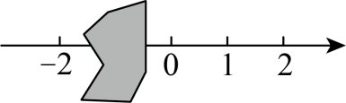
A．−3 B．−1 C．−4 D．3
【答案】B
【分析】在数轴上，原点右侧为正数，原点右侧为负数，且数轴上的点越往右数越大，越往左数越小.
【详解】解：被遮住的左边是整数-2，右边是0，因此被遮挡的整数是-1.
故选B.
【点睛】本题主要考查数轴表示数的意义，互为相反数的求法，理解数轴表示数的意义.
【变式3-2】（24-25七年级上·辽宁盘锦·阶段练习）如图，小冰在写作业时不慎将墨水滴在数轴上，此时墨迹盖住的整数有 个．
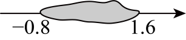
【答案】2
【分析】本题考查了数轴的特点，理解并掌握数轴上点与数的一一对应关系是解题的关键．
根据数轴的特点，数形结合分析即可求解．
【详解】解：根据数轴的特点，墨迹盖住的整数有0，1，共2个，
故答案为：2 ．
【变式3-3】若数轴上表示整数的点称为整点，画一数轴，并规定单位长度为l厘米，若在这条数轴上随意画出一条长10厘米的线段AB，则线段AB盖住的整点有（ ）
A．8个或9个 B．9个或10个 C．10个或11个 D．11个或12个
【答案】C
【分析】分线段AB的端点在整点上和不在整点上两种情况讨论，据此得出规律即可解答本题．
【详解】解：依题意得：①当线段AB的端点在整点上时，覆盖11个数；
②当线段AB的端点不在整点，即在两个整点之间时覆盖10个数．
故选：C．
【点睛】本题主要考查了分类讨论思想和数形结合思想的应用，AB取一个较小的整数，然后画出图形得出规律是解决此题的关键．
【题型4 数轴上点的平移】
【例4】（24-25七年级上·全国·期末）在数学超市课上，李老师出了这样一道题：点A是数轴上一点，一只蚂蚁从点A出发爬了5个单位长度到了表示的数2的点，则点A所表示的数是 ．
【答案】7或−3
【分析】本题主要考查了数轴的动点问题，准确计算是解题的关键．
根据题意，分两种情况讨论即可求解；
【详解】解：从数轴上A点出发向左爬了5个单位长度到了表示的数2的点，则A点表示的数是2+5=7；
从数轴上A点出发向右爬了5个单位长度到了表示的数2的点，则A点表示的数是2−5=−3；
综上所述，点A所表示的数是7或−3；
故答案为：7或−3
【变式4-1】（24-25七年级上·甘肃平凉·期中）把数轴上表示数2的点向右移动3个单位后，表示的数为（ ）
A．5 B．1 C．5或−1 D．都不正确
【答案】A
【分析】本题考查了数轴，熟知“左减右加”的法则是解答此题的关键．
根据“左减右加”的法则进行解答即可．
【详解】解：把数轴上表示数2的点向右移动3个单位长度后，即2+3=5，表示的数为5，
故选：A．
【变式4-2】（24-25七年级上·河北唐山·期中）如图，将点P向右平移2个单位，对应的数是（ ）
A．−1 B．0 C．1 D．2
【答案】B
【分析】本题考查了数轴上点的平移，掌握“左减右加”的原则是解答本题的关键．根据“左减右加”的原则即可求解．
【详解】解：将点P向右平移2个单位，对应的数是0，
故选：B．
【变式4-3】（24-25六年级上·山东济宁·期中）若数轴上的点A距离原点3个单位长度，若一个点从点A出发向右移动2个单位长度，此时终点所表示的数是 ．
【答案】−1或5
【分析】本题考查数轴上的点所表示的数，根据数轴上的点距离原点3个单位长度，可得点A表示的数，再根据向右移动几个单位加几，向左移动几个单位减几．明确向右移动用加法，向左移动用减法是解题的关键．
【详解】解：∵点A距离原点3个单位长度，
∴点A表示的数为−3或3，
当点A表示的数为−3时，一个点从点A出发向右移动2个单位长度，终点所表示的数是：−3+2=−1；
当点A表示的数为3时，一个点从点A出发向右移动2个单位长度，终点所表示的数是：3+2=5；
综上所述，此时终点所表示的数是−1或5．
故答案为：−1或5．
【题型5 相反数的定义】
【例5】（24-25七年级上·广东广州·期中）下列各对数中，互为相反数的是（ ）
A．−0.5和12 B．2和12 C．−3和13 D．13和−2
【答案】A
【分析】本题考查了相反数的定义，只有符号不同的两个数是互为相反数，其中一个数是另一个数的相反数，正数的相反数是负数，负数的相反数是正数，0的相反数是0．据此逐项分析即可．
【详解】解：A．−0.5=−12和12只有符号不同，是互为相反数，故该选项符合题意；
B．2和12不是相反数，故该选项不符合题意；
C．−3和13，不是相反数，故该选项不符合题意；
D．13和−2不是相反数，故该选项不符合题意；
故选：A．
【变式5-1】（20-21七年级上·吉林长春·阶段练习）若一个数的相反数比它本身大，则这个数为
【答案】负数
【分析】根据正数的相反数是负数，负数的相反数是正数，0的相反数是0，即可得出结论．
【详解】解：∵一个数的相反数比它本身大
∴这个数为负数
故答案为：负数．
【点睛】此题考查的是相反数，掌握正数的相反数是负数，负数的相反数是正数，0的相反数是0，是解题关键．
【变式5-2】（22-23七年级·江苏·假期作业）填空：
（1）−−2.5的相反数是 ；
（2） 是−100的相反数；
（3）−515是 的相反数；
（4） 的相反数是−1.1；
（5）8.2和 互为相反数．
（6）a和 互为相反数．
（7） 的相反数比它本身大， 的相反数等于它本身．
【答案】 −2.5 100 515 1.1 −8.2 −a 负数 0
【分析】根据相反数的定义逐一解答即可．
【详解】解：（1）−−2.5=2.5，相反数是−2.5；
故答案为：−2.5；
（2）100是−100的相反数；
故答案为：100；
（3）−515是515的相反数；
故答案为：515；
（4）1.1的相反数是−1.1；
故答案为：1.1；
（5）8.2和−8.2互为相反数．
故答案为：−8.2；
（6）a和−a互为相反数．
故答案为：−a；
（7）负数的相反数比它本身大，0的相反数等于它本身．
故答案为：负数，0．
【点睛】本题考查了相反数的定义，熟知只有符号不同的两个数互为相反数是解题关键．
【变式5-3】（24-25七年级上·湖南怀化·期中）下面各组数中：①12和−12；②−(−6)和+(−6)；③−(−4)和+(+4)；④−(+1)和+(−1)；⑤+512和+−512；⑥−317和−−317．互为相反数的是 （填序号）．
【答案】①②⑤⑥
【分析】本题主要考查了相反数和多重符号化简，根据一个数的相反数就是在这个数前面添上“−”号，化简各项数字后再判断求解即可．正确使用相反数的意义对每个数字进行化简是解题的关键．
【详解】解：①12和−12互为相反数；
②−(−6)=6，+(−6)=−6，∵6和−6互为相反数，∴−(−6)和+(−6)互为相反数；
③−(−4)=4，+(+4)=4，∵4和4不是互为相反数，∴−(−4)和+(+4)相等，不是互为相反数；
④−(+1)=−1，+(−1)=−1，∵−1和−1不是互为相反数，∴−(+1)和+(−1)相等，不是互为相反数；
⑤+−512=−512，∵512和−512互为相反数，∴+512和+−512互为相反数；
⑥−−317=317，∵−317和317互为相反数，−317和−−317互为相反数．
∴互为相反数的是①②⑤⑥．
故答案为：①②⑤⑥．
【题型6 根据相反数定义求值】
【例6】（24-25七年级上·湖南湘潭·期末）如图是一个正方体的表面展开图，若该正方体相对面上的两个数互为相反数，则a= ，b= ，c=
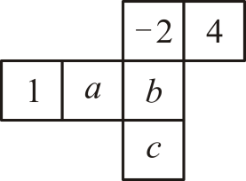
【答案】−4，−1，2
【分析】本题考查正方体的展开图，代数式求值，利用空间想象能力得出相对面的对应关系，从而求出a、b、c的值．
【详解】解：∵该正方体相对面上的两个数互为相反数，
∴a=−4，b=−1，c=2．
【变式6-1】（24-25七年级上·广西贺州·期末）a的相反数是−1，这个数a是 ．
【答案】1
【分析】本题考查了相反数：只有符号不同的两个数叫做互为相反数．根据相反数的定义即可得到结论．
【详解】解：若一个数的相反数是−1，则这个数是1，
故答案为：1．
【变式6-2】（2024七年级上·全国·专题练习）相反数等于它本身的数m是 ．
【答案】0
【分析】本题考查了相反数，根据0的相反数是0，即可求解．
【详解】解：相反数等于它本身的数m是0，
故答案为：0．
【变式6-3】（24-25七年级上·江苏宿迁·期末）已知a−3与−4互为相反数，则a= ．
【答案】7
【分析】本题考查了解一元一次方程和相反数，根据互为相反数的两个数的和为0得出方程，再根据等式的性质求出方程的解即可．
【详解】解：∵a−3与−4互为相反数，
∴−4+a−3=0，
∴a=7．
故答案为：7．
【题型7 化简多重符号】
【例7】（24-25七年级上·内蒙古乌兰察布·阶段练习）给出下列各数：+−10，−+15，−−7，−+−9，−−−20．其中负数有（ ）
A．0个 B．2个 C．3个 D．4个
【答案】C
【分析】本题考查化简多重符号，将各数化简后，根据负数：“小于0的数”，进行判断即可．掌握化简多重符号，正负数的意义，是解题的关键．
【详解】解：+−10=−10，−+15=−15，−−7=7，−+−9=9，−−−20=−20，
则共有3个负数，即+−10，−+15，−−−20．
故选：C．
【变式7-1】（22-23七年级上·宁夏吴忠·阶段练习）−−−2的值是 ．
【答案】−2
【分析】本题主要考查化简多重符号，根据多重符号的计算顺序去括号即可．
【详解】解：原式=−2=−2，
故答案为：−2．
【变式7-2】（23-24七年级上·山东德州·阶段练习）化简：①−+−2.9= ．②−−3= ．
③−−−0.5= ． ④−−+2021= ．
【答案】 −2.9 3 −0.5 −2021
【分析】根据多重符号的化简，绝对值的意义进行化简即可．
【详解】解：①−+−2.9=−−2.9=−2.9；
②−−3=3；
③−−−0.5=−0.5=−0.5；
④−−+2021=−−2021=−2021；
故答案为：−2.9；3；−0.5；−2021．
【点睛】本题考查了绝对值的意义，熟知：正数的绝对值是正数，负数的绝对值是它的相反数，0的绝对值是0；是解本题的关键．
【变式7-3】（24-25七年级上·新疆和田·阶段练习）化简下列各数：
(1)+−2；
(2)−+5；
(3)−−3.4；
(4)−+−8；
(5)−−−9．
【答案】(1)−2
(2)−5
(3)3.4
(4)8
(5)−9
【分析】本题考查了相反数中多重符号的化简，多重符号的化简：与“+”个数无关，有奇数个“−”负，有偶数个“−”号结果为正．
（1）根据多重符号的化简法则求解，即可解题；
（2）根据多重符号的化简法则求解，即可解题；
（3）根据多重符号的化简法则求解，即可解题；
（4）根据多重符号的化简法则求解，即可解题；
（5）根据多重符号的化简法则求解，即可解题．
【详解】（1）解：+−2=−2；
（2）解：−+5=−5；
（3）解：−−3.4=3.4；
（4）解：−+−8=8；
（5）解：−−−9=−9．
【题型8 数轴与相反数的综合】
【例8】（24-25八年级下·海南儋州·期中）如图，数轴上点A表示的数的相反数是（ ）
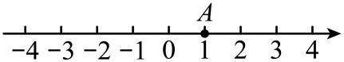
A．−2 B．−1 C．0 D．1
【答案】B
【分析】本题考查了数轴，相反数，掌握相反数的定义是解题关键．根据数轴可知点A表示的数是1，再根据相反数的定义，即可得到答案．
【详解】解：由数轴可知，点A表示的数是1，
1的相反数是−1，
故选：B．
【变式8-1】（24-25七年级上·安徽阜阳·阶段练习）在数轴上，若点A，B分别表示互为相反数的两个数，并且这两个点的距离是8，点A在原点的左侧，则点A表示的数为 ．
【答案】−4
【分析】本题考查了相反数与数轴的关系，只有符号不同的两个数叫做互为相反数；相反数分为两类：一、0的相反数为0，二、可以是一个正数与一个负数，但它们的绝对值相等，即这两点到原点的距离相等，掌握相反数与数轴的关系是解题的关键．
根据相反数的概念得A和B是一个正数和一个负数，且距离为8；由相反数到原点的距离相等，所以可以得出两点所表示的数，即可得到结果．
【详解】解：8÷2=4，
∵A在原点的左侧，
∴A表示的数为−4．
故答案为：−4．
【变式8-2】（2024七年级上·全国·专题练习）如图所示，A，B，C为数轴上三点，且当A为原点时，点B表示的数是2，点C表示的数是5．若以B为原点，则点A表示的数是 ，点C表示的数是 ；若A，C表示的两个数互为相反数，则点B表示的数是 ．
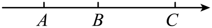
【答案】 −2 3 −0.5
【分析】本题考查数轴的综合应用，熟练掌握点在数轴上的表示、数轴的意义及三要素、相反数的意义和性质等是解题关键．
根据各点之间的位置关系、原点位置及相反数的性质解答；
【详解】解：由题意可知：AB=2，AC=5，BC=3，
∴以B为原点时，点A表示的数是−2，点C表示的数是3，
若A，C表示的两个数互为相反数，则AC的中点（如图，设为D）为原点，
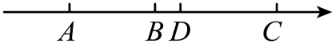
∴AD=CD=2.5，BD=AD−AB=0.5，且D在B的右边，
∴点B表示的数是−0.5；
故答案为：−2；3；−0.5．
【变式8-3】（24-25七年级下·全国·期中）如图，将一刻度尺放在数轴上（数轴的单位长度是1cm），刻度尺上的“0cm”和“6cm”分别对应数轴上表示实数−2和实数x的两点，若x与−2互为相反数，则数轴上原点O对应刻度尺上的数值为 ．
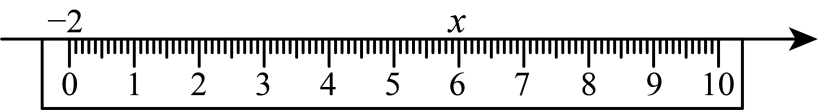
【答案】3
【分析】根据x与−2互为相反数，得到数轴的原点是这两个数表示的点构成线段的中点处，也是刻度尺上表示数0和6的点构成的线段的中点，设这个点对应的数为xO，则xO−0=6−xO，解答即可．
【详解】解：根据题意，x与−2互为相反数，得到数轴的原点是这两个数表示的点构成线段的中点处，也是刻度尺上表示数0和6的点构成的线段的中点，
设这个点对应的数为xO，则xO−0=6−xO，
解得xO=3．
故答案为：3．
【点睛】本题考查了数轴上表示点，相反数的意义，线段中点的意义，一元一次方程的应用，数轴上两点间的距离，熟练掌握相关知识是解题的关键．